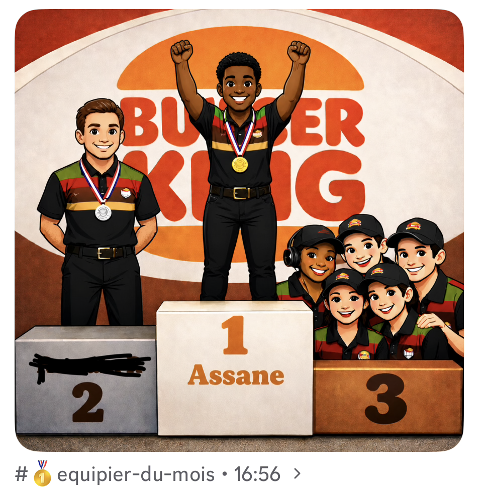

Bonjour, je suis
Élève ingénieur en Télécommunications et Réseaux, en dernière année du cycle ingénieur (Bac+5), à la recherche d'un stage de fin d'études dans les domaines des réseaux, de l'intelligence artificielle et des systèmes numériques.
Actuellement élève ingénieur en dernière année du cycle ingénieur (Bac+5) à l'Sup Galilée - Université Sorbonne Paris Nord (USPN), spécialisé en Télécommunications et Réseaux, j'ai développé au fil de mes stages et projets des compétences transversales en réseaux, informatique, intelligence artificielle et data science. J'ai notamment travaillé aussi bien sur la simulation de réseaux cellulaires (LTE, NS-3) que sur des algorithmes de Machine Learning pour la classification d'images satellites et le traitement d'images médicales par Deep Learning. Je reste ouvert à toute opportunité de stage de fin d'études dans les domaines des Télécommunications, des Réseaux, de l'Informatique, de l'Intelligence Artificielle ou de la Data Science, avec l'envie de mettre mes compétences techniques au service de projets concrets.
Mon parcours m'a permis d'acquérir une solide expertise en développement informatique, en télécommunications, en traitement du signal et des données, ainsi qu'en technologies réseaux. J'ai travaillé sur des projets innovants, notamment le développement d'une plateforme touristique et d'un chatbot qui parle la langue wolof (langue parlée au Sénégal) au sein d'une start-up, où j'occupe actuellement le poste de chargé de communication et de gestion de projet.
Télécommunications et Réseaux
Sup Galilée - Université Sorbonne Paris Nord (USPN) - Villetaneuse (France)Informatique, Télécoms et Réseaux
Ecole Supérieure Polytechnique (ESP) - UCAD - Dakar (Sénégal)Diplôme Universitaire de Technologie
Ecole Supérieure Polytechnique (ESP) - UCAD - Dakar (Sénégal)Série S - Mathématiques, Sciences Physiques et Sciences de la Vie et de la Terre
Lycée Touba Toul - Thiès (Sénégal)Expérience professionnelle dans la restauration rapide, avec une implication particulière dans la relation client, la qualité de service et le bon fonctionnement opérationnel du restaurant.
Reconnaissance de l'implication professionnelle, de la qualité du service, de la polyvalence et de la contribution au bon fonctionnement du restaurant. Distinction accompagnée de primes de performance.

Développement et optimisation d'une méthode de classification non supervisée d'images satellites hyperspectrales, combinant informations spectrales et spatiales avec des approches de clustering et d'optimisation
Amélioration de la qualité d'images médicales à faible dose de rayons X via des modèles de deep learning de débruitage.
Participation à la coordination des activités et des projets de la start-up, avec un suivi opérationnel, la gestion des données et l'utilisation d'outils collaboratifs pour faciliter l'organisation et le suivi des travaux
Conception et déploiement d'un système de diffusion publicitaire automatisé basé sur la VoIP (Asterisk / IVR).
Développement d'un pipeline de traitement et d'enrichissement d'un catalogue e-commerce de 525 034 produits. L'objectif était d'améliorer la qualité des données en identifiant les incohérences de catégorisation, en prédisant les catégories manquantes et en extrayant automatiquement les dimensions et les couleurs à partir des libellés produits.
Planification et simulation d'un réseau LTE sous NS-3 afin d'étudier les performances d'utilisateurs mobiles à l'aide du modèle de mobilité Netmob25. Analyse des métriques réseau telles que le débit, le délai, les pertes de paquets et le mécanisme de handover entre stations de base.
Développement d'un modèle de Machine Learning supervisé capable de prédire le prix de vente de maisons à partir de caractéristiques immobilières. Mise en place d'un pipeline complet de Data Science incluant l'analyse des données, le prétraitement, l'entraînement du modèle et l'évaluation des performances.
Conception et programmation de robots autonomes pour la Coupe de France de Robotique 2025 (Robot-Rock-Tour). Missions de nos robots: : construction de gradins, déploiement de banderole, interaction avec les PAMIs, faire du show sur la scène, rangement d'éléments de jeu, et retour en zone d'arrivée à la fin du spectacle
Formation pratique consacrée aux fondamentaux du Machine Learning supervisé. Étude des modèles de régression et de classification, de la régularisation et des méthodes d'évaluation des performances. Mise en œuvre des algorithmes avec Python, NumPy et Scikit-learn.
Formation consacrée aux fondamentaux des réseaux informatiques, à la communication entre équipements et aux mécanismes de transmission des données. Étude de l'adressage IP, des protocoles réseau, des équipements d'interconnexion et des principes de sécurité et de dépannage.
Formation portant sur les principes de la comptabilité durable et l'intégration des enjeux environnementaux, sociaux et de gouvernance dans l'analyse des organisations. Découverte des mécanismes de double matérialité et des enjeux de performance extra-financière.
N'hésitez pas à me contacter pour discuter d'opportunités ou de collaborations !